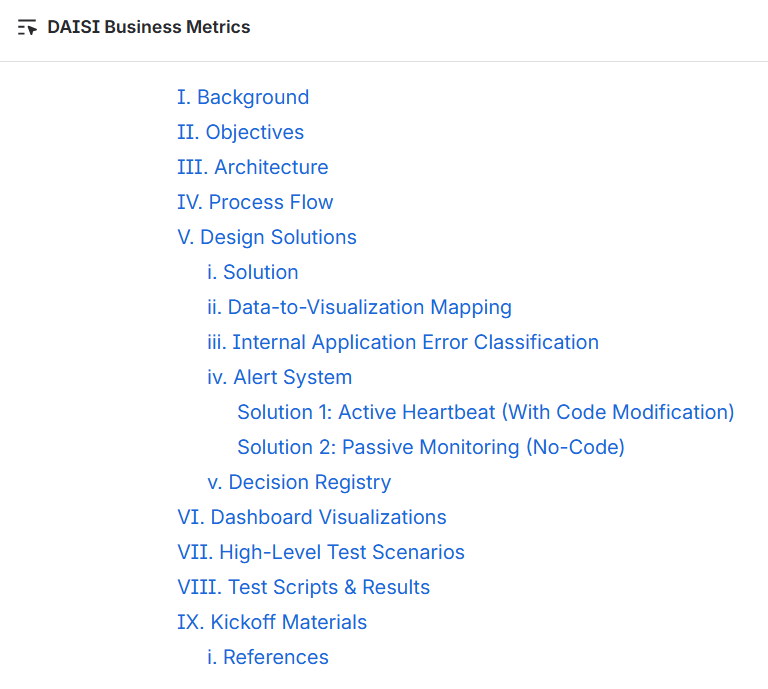
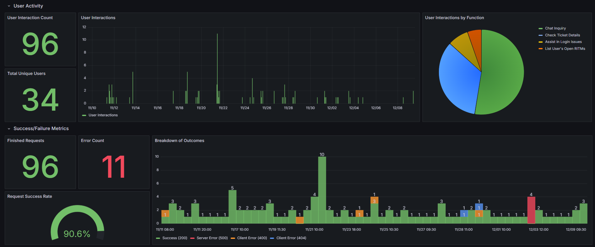
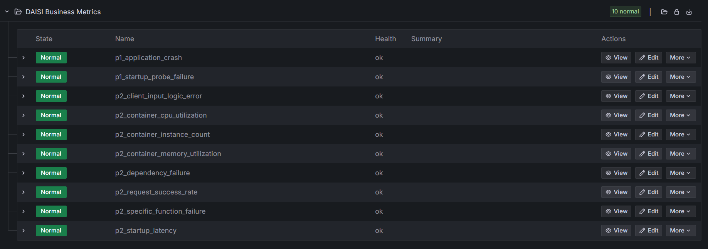

Internship Documentation
Software Engineer and Systems Analyst Internship
Internship Overview
Company: Globe Telecom, Inc.
Role & Dates: Software Engineer and Systems Analyst Intern
Location: The Globe Tower, Taguig
My internship journey with Globe provided me hands-on experience in automation, process improvement, and system documentation within a professional engineering team. My core contributions include a project centered around observability and data analytics as well as tasks invovling code reviews, access management, and system analysis. I was also tasked with supporting the team by maintaining and updating documentation in our Confluence space. This exposure provided an excellent opportunity to learn industry-standard software development processes, tooling (like Jira and Git), and best practices under the guidance of experienced developers.
Project 1: DAISI Business Metrics
Project Description
DAISI (Digital Assistant for IT Services and Inquiries) is a chatbot integrated into Google Chat that automates common IT support interactions such as checking ticket statuses, assisting with login or access issues, and handling service-related requests. DAISI Business Metrics is a dashboard built around, Clairvoyance, an open-source observability platform based on a Grafana technology stack. The goal of the dashboard is to visualize key operational metrics such as user activity, request outcomes, and error patterns. This would enable more efficient troubleshooting and continuous improvement of the service.
Tasks and Output
Task A: Project Documentation
The project began with creating a comprehensive Design Document, which served as the foundational blueprint for the entire solution. This document detailed the project's Architecture, Process Flow, and Design Solutions. Key technical sections covered the data-to-visualization mapping, internal application error classification, and the two varying approaches to implementing the Alert System. The document ensured team alignment by finalizing the Decision Registry, Dashboard Visualizations, and high-level testing plans prior to implementation.
Output: Design Document

View Screenshot (Click to enlarge)Task B: Observability Dashboard for an AI Chatbot
This task focused on implementing the observability platform using the Clairvoyance (Grafana-based) stack to visualize DAISI's operational data. I designed and deployed a comprehensive Grafana dashboard by extracting and transforming the chatbot's Google Cloud Run Observability logs and metrics into a time-series database. The dashboard tracks key metrics such as daily active user counts, success/failure rates, error patterns, and response latency.
Output: Grafana-based Dashboard

View Screenshot (Click to enlarge)Output: Alert System

View Screenshot (Click to enlarge)Learnings and Contribution
This project significantly expanded my proficiency in cloud platforms and modern observability practices. I gained hands-on experience navigating the GCP Console and managing serverless deployments using Google Cloud Run services. The core technical learning centered on the observability stack: I learned about Google's native logging and metrics and how to query them from a time-series database. I became familiar with advanced Grafana transformations and writing complex queries using LogQL to interact with the Loki log aggregation server. Finally, I contributed to system stability by designing and implementing proactive Grafana alerting rules. The project established a system that allows the team to maintain and improve the chatbot service.
Project 2: GCP Sandbox
Project Description
The Google Cloud Platform (GCP) Sandbox is an isolated, 'plug-and-play' testing environment designed to mirror the existing Development (dev) environment. The primary challenge was the repetitive, manual setup of essential configurations (APIs, IAM roles, service accounts) required every time a new testing project was created. The goal was to eliminate this setup friction by ensuring the sandbox is preconfigured to match the dev environment. This allows developers to immediately run Terraform modules, validate APIs, and perform integration testing without manually fixing missing permissions or enabling services, significantly accelerating the development and testing workflow.
Output
Task A: Project Documentation
This task involved initiating the project by creating the foundational Design Document and defining the initial Replication Strategy. The design document is focused to clearly articulate the system boundaries, target configuration state, and the methodology for synchronizing the sandbox and dev environments. Key planning aspects included:
- Defining the Scope and Resources to be replicated (e.g., core APIs, specific IAM roles, and default service accounts).
- Mapping the Technical Process Flow for automated configuration copying or synchronization.
- Establishing the Acceptance Criteria for a "ready-to-use" Sandbox (e.g., successful execution of a Terraform deployment test).
The document serves as the project blueprint, ensuring all required project roles and enabled APIs are captured before deployment automation begins.
Output: Initial Design Document Structure and Scope
Learnings and Contribution
This initial phase of the GCP Sandbox project provided an introduction to the principles of cloud environment management and Infrastructure as Code (IaC). I focused on understanding the importance of GCP IAM policies and service accounts, learning how these elements govern successful deployments within a large organization. My contribution involved establishing the project's initial scope and blueprint for the development team.
Supporting Tasks: Jira Management and Team Collaboration
Throughout the internship, I gained real-world experience operating within an Agile development framework. The team utilized Jira to manage project backlogs, track Epics and Stories, and monitor task progress. Version control and code management were performed using GitLab. Team synchronization was maintained through daily stand-up meetings and collaborative efforts across Google Meet/Chat for communication and Confluence for centralized documentation and knowledge sharing. This exposure provided practical experience in corporate development setups, emphasizing effective communication, iterative development, and accountability within a fast-paced, professional engineering environment.